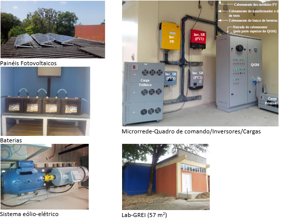

<div class="content">
	<section>
		<div class="container flex">
			<div class="text editable">
				<h2>Instalação:</h2>
				<h2 class="Publicação">Periódicos:</h2>
				<p>	
					Nossos pesquisadores têm acesso a instalações e equipamentos, incluindo:<br>
					- Relés de proteção digitais<br>
					- Switch de comunicação<br>
					- Mala de teste de relés<br>
					- Fonte de distúrbios trifásica de 30 kVA<br>
					- Fonte de distúrbios trifásica de 3 kVA<br>
					- Fonte cc emuladora de sistema solar fotovoltaico de 10 kW<br>
					- Registradores de distúrbios<br>
					- Cargas<br>
					- Microrrede com 3 sistemas solar fotovoltaicos de 2 kWp cada<br>
					- Bancada de gerador de indução de dupla alimentação de 10 kW com turbina eólica emulada<br>
					- Sala de simulação computacional<br>
					GREI compartilha o suporte laboratorial do Grupo de Processamento de Energia e Controle-GPEC.
					
				</p>
			</div>
		</div>
		<div class="container flex">
			<div class="text editable">
				<h2 class="Publicação">Microrrede GREI</h2>
				
			</div>
		</div>
	</section>
</div>
